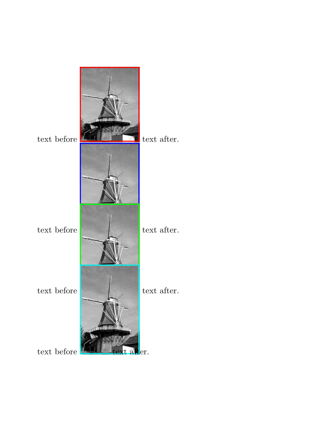
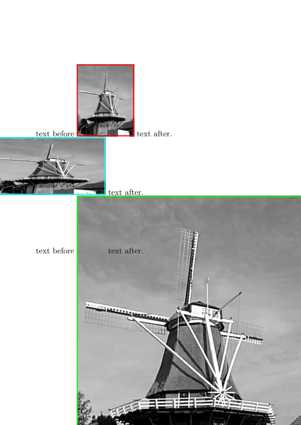

Contents
Summary
The command \bleed is used to modify the actual dimension of the place allocated to a figure.
Settings
Description
Have a look into the Details manual, it makes no sense to repeat it here.
Used with \bleedwidth or \bleedheight to specify the dimensions of the picture, you can extend the picture to desired border or corner of the page
Examples
Example 1
-
\setuppapersize[A6] \setupheadertexts[] \starttext text before \externalfigure[mill][width=2cm,frame=on,rulethickness=1pt,framecolor=red] text after. text before \bleed [width=2cm,height=3cm,location=l]{% \externalfigure [mill] [width=2cm,height=3cm,frame=on,rulethickness=1pt,framecolor=blue]} text after. text before \bleed [width=2cm,height=2cm,location=l]{% \externalfigure [mill] [width=2cm,height=3cm,frame=on,rulethickness=1pt,framecolor=green]} text after. text before \bleed [width=1cm,height=2cm,location=l]{% \externalfigure [mill] [width=2cm,height=3cm,frame=on,rulethickness=1pt,framecolor=cyan]} text after. \stoptext
-

obviously location is key
-
\setuppapersize[A6] \setupheadertexts[] \starttext text before \externalfigure[mill][width=2cm,frame=on,rulethickness=1pt,framecolor=red] text after. text before \bleed [width=2cm,height=3cm,location=tr]{% \externalfigure [mill] [width=2cm,height=3cm,frame=on,rulethickness=1pt,framecolor=blue]} text after. text before \bleed [width=2cm,height=2cm,location=tr]{% \externalfigure [mill] [width=2cm,height=3cm,frame=on,rulethickness=1pt,framecolor=green]} text after. text before \bleed [width=1cm,height=2cm,location=tr]{% \externalfigure [mill] [width=2cm,height=3cm,frame=on,rulethickness=1pt,framecolor=cyan]} text after. \stoptext
- 
Used with \bleedwidth or \bleedheight
-
\setuppapersize[A6] \setupheadertexts[] \starttext text before \externalfigure[mill][width=2cm,frame=on,rulethickness=1pt,framecolor=red] text after. text before \bleed [width=1cm,height=2cm,location=l]{% \externalfigure [mill] [width=\bleedwidth,height=\bleedheight,frame=on,rulethickness=1pt,framecolor=cyan]} text after. text before \bleed [width=1cm,height=2cm,location=br]{% \externalfigure [mill] [width=\bleedwidth,height=\bleedheight,frame=on,rulethickness=1pt,framecolor=green]} text after. \stoptext
- 